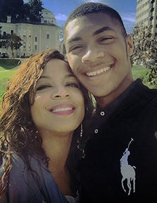
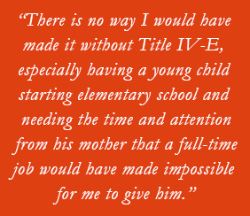

On a Detour from Law School, Aprille Flint Embraced Motherhood and Social Work
A child who is molested by a manipulative stepfather. A frightened mother. Disbelieving relatives. The child falling through what was supposed to be her safety net.
This wasn’t a scenario that Aprille Flint personally encountered, but it might as well have been. The after-school special she watched as a girl left such a searing impression that it drove her desire to advocate for children’s rights and to pursue a career by which she felt she could accomplish this—as a lawyer.
It was this goal she had in mind after earning her undergraduate degree in African American Studies at San José State University. It remained her goal, even as she worked for many years in non-profit organizations, mostly in academic support, and educational opportunity programs offering enrichment and case management for local middle and high school students.
As she prepared to attend law school, Aprille says, “I was running a teen center in Santa Clara County and living in Alameda County, commuting, making very little money, but enjoying the work.” Then, she found out she was going to be a mother. “I felt I had to choose between starting law school, which I had dreamed of and prepared for most of my life, and becoming a mother, which I had imagined would happen much later in life,” she says. “I chose motherhood.”
Aprille Flint and her son,
Isaiah Pitre, 15
A Life-Altering Position
Considering her options, Aprille knew she had to find work closer to home that leveraged her experience and skills and that brought in more money. At the time, she recalls, “The federal government was responding to the lawsuit that was filed against the child welfare system that led to the national funding for Independent Living Programs for emancipating foster youth.” Because of her experience serving diverse youth in academic settings, she was offered the job as Aftercare Education Specialist, the first position for the original Independent Living Skills Program (ILSP) in Contra Costa County.
“How that role changed my future!” she marvels. “I was re-exposed to children and youth needing advocacy, support, safety, access to opportunity and specifically those for who had been set up for repeated failed adult relationships.”
RELATED: Read other CalSWEC Graduate and Alumni Stories
It was at the June 2000 ILSP graduation, listening to the Presiding Juvenile Court Judge’s moving message to the young adults, when, Aprille says, “It hit me like a bolt of lightning; I want to be one of those [a Juvenile Court judge]! The convergence of the law, advocacy, and what I believed was the ultimate power to make a difference in the lives of young people. I decided at that moment—seven-months pregnant and very disappointed that I had not just finished my first year of law school—that my life had taken a very important detour. I am still on that detour, 15 years later,” she adds, ”having worked in almost all of the systems that Juvenile Court judges touch through the course of their decision-making.”
Before going on to law school, still an aspiration, Aprille says she knew that she wanted to learn those systems. “What I did not know was that I would land on the path of child welfare social work—a path I believe I will keep at least one foot on for the rest of my life, in one way or another.”
Developing a Foundation in Child Welfare
Entering the child welfare field, Aprille realized she first needed a social work foundation to support her ultimate goal: to become a “grounded and effective Juvenile Court judge. I knew I wanted to be a social worker behind the bench!” That meant an MSW “to get the grounding, values, and theoretical framework that undergirds the practice of social work with children, families, and communities.”
In researching MSW programs, Aprille was relieved to discover CalSWEC’s Title IV-E Stipend Program.“There is no way I would have made it without Title IV-E,” she says, “especially having a young child just entering elementary school and needing the time and attention from his mother that a full-time job would have made impossible for me to give him.”
RELATED: Read more about Aprille Flint
She entered San José State “passionate about social justice, excited to be the first of my family to be in graduate school, eager to serve the community and start my long journey back to the law school road.”
Self-described as “outspoken in class,” Aprille says, she “challenged my peers and pushed on the institution to model for us as students what they were expecting of us as new social work professionals.” She says, “I will never forget a particular day when the group of us were in a child welfare policy class, and I got really emotional about what I perceived as a pervasive gap in African American leadership at the system and political levels that I believed was key to addressing some of the system issues with the children and families served.”
It was that passion and spirit of advocacy that marked her as a leader. Her peers elected her as their CalSWEC student representative both years of graduate school. She was active in planning Title IV-E Student Days, participated in Lobby Days, made friends and connections all over the state, and constantly focused her advocacy “around student access and equity and issues relating to racial disparity and disproportionality in child welfare.” Her close-knit IV-E cohort of mostly women still remains connected, says Aprille. “We lean on one another for support, encouragement, and to keep one another on our professional toes!”
Challenges in the Community
Today, Aprille is an expert community engagement liaison, trainer, coach, and facilitator with California Partners for Permanency. “One of the biggest challenges we face in our work of engaging with community, towards practice and system improvement, is that system leaders and decision-makers do not always value the expertise and wisdom of those most impacted by the system,” she observes.
RELATED: Read more about California Partners for Permanency (CAPP)
“I find that token representation remains quite the norm in terms of community partnership, if they are even there at all. Having stakeholders at the table but unclear about their role, function, purpose, and without space be truly listened to and valued means their representation often lands as disrespectful and disingenuous.
“In order to truly partner with community and build systems that leverage meaningfully engaged and active community and Tribal representatives, leaders have to model cultural humility, value the wisdom, expertise, and often traumatic system-related experiences and create bridges within their internal systems where community can find a hospitable culture for their input and perspective.”
Engaging in Work and Life
Aprille finds her career rewarding. “I absolutely love supporting the development of our often overworked and under-supported social work professional staff,” she says. “Creating a space where staff can build confidence and competence and reflect on their work helps them feel good about their work with children and families, even with really challenging work cultures and stressful demands of the job. What is most rewarding is knowing that supported staff ultimately serve children and families better! Healing the healers is not an activity that take for granted. After all, what would we do without them?
Beyond work, Aprille says, “I love spending time with my son and my partner,” which includes watching movies and “Game of Thrones”; taking walks and eating good food; and traveling to their vacation home in Nevada. Avid sports fans, they fight over the Niners and the Raiders, Cal vs. Stanford and attend her son Isaiah’s football games and track meets. In what little spare time she has, Aprille teaches martial arts in Oakland. She notes, “The key characteristics of any great martial artist are courtesy, integrity, perseverance, and self-control.
“These really do represent both my core values as a martial artist and my core values as a social worker and person. We use our hearts, minds, bodies, and spirits to fight battles in the world with the armor of perseverance and integrity to keep us grounded.”